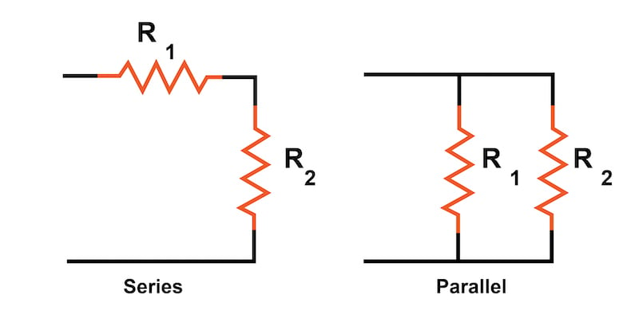
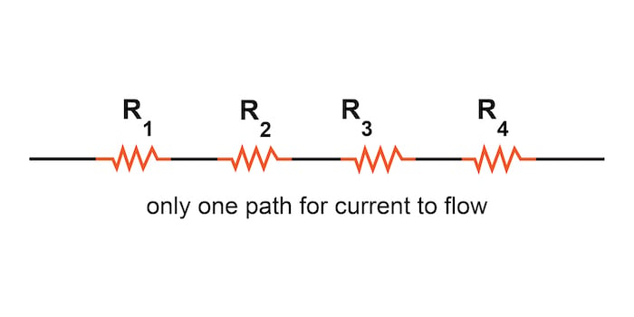
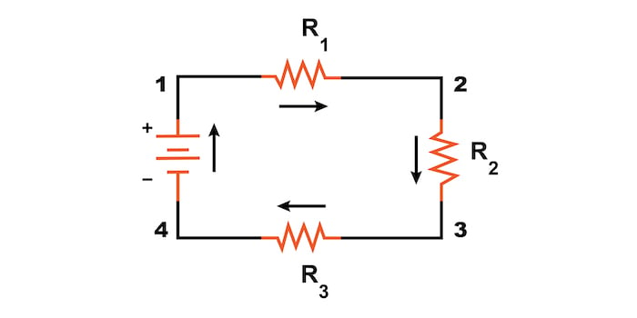
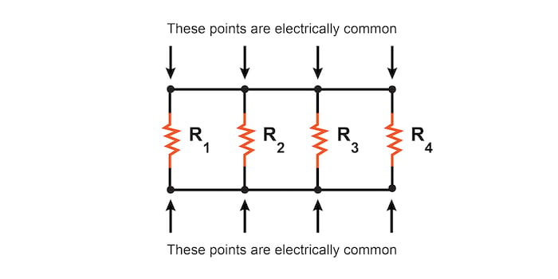
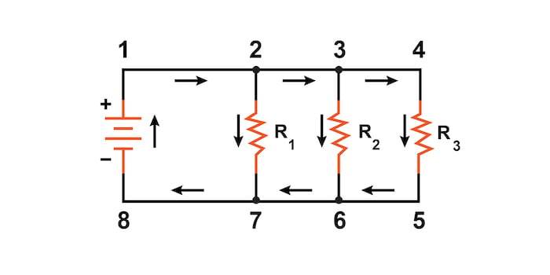

In a series circuit, all components are connected end-to-end to form a single path for current flow. In a parallel circuit, all components are connected across each other with exactly two electrically common nodes with the same voltage across each component.
Circuits consisting of just one battery and one load resistance are very simple to analyze, but they are not often found in practical applications. Usually, we find circuits where more than two components are connected together.
There are two fundamental ways in which to connect more than two circuit components: series and parallel. These two basic connection methods can be combined to create more complex series-parallel circuits.
The definition of a series circuit is a circuit where the components are connected end-to-end in a line as illustrated in Figure 1.

These series resistors form a single path through which current can flow.
Now, let’s examine an example of a series circuit as shown in Figure 2:

Here, we have three resistors (labeled R1, R2, and R3) connected in a long chain from one battery terminal to the other. Each resistor in a series circuit shares one electrical node with its nearest neighbor.
Note: The subscript labels—those little numbers to the lower-right of the letter “R”—are unrelated to the resistor values in ohms. They serve only to identify one resistor from another.
A series circuit’s defining characteristic is that all components in a series circuit have the same current flowing through them. There is only one path for the current to flow. In the circuit from Figure 2, the current (I) flows clockwise to complete a full loop from the positive battery terminal back to the negative terminal and then through the battery following the path 1–2–3–4–1.
The definition of a parallel circuit is a circuit where all components are connected across each other’s leads as shown in Figure 3.

In a purely parallel circuit, there are never more than two sets of electrically common points, no matter how many components are connected. There are many paths for current flow, but only one voltage across all components.
Let’s look at an example of a parallel circuit as shown in Figure 4.

Again, we have three resistors, but this time there are three loops for the current to flow from the positive battery terminal back to the negative terminal:
Each individual path through R1, R2, and R3 (2–7, 3–6, and 4–5) is called a branch.
A parallel circuit’s defining characteristic is that all components are connected between the same set of electrically common points. Looking at the schematic diagram from Figure 4, we see that points 1, 2, 3, and 4 are all electrically common; so are points 5, 6, 7, and 8. All of the resistors, as well as the battery, are connected between these two sets of points. This means that the same voltage (V) is dropped across all components in a parallel circuit.